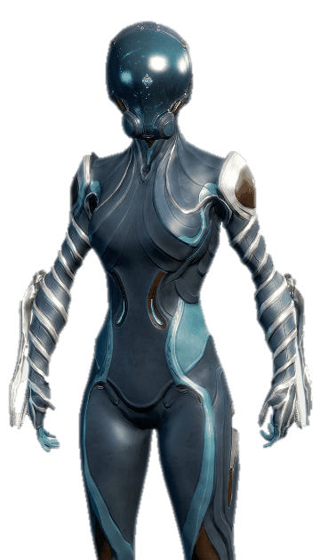
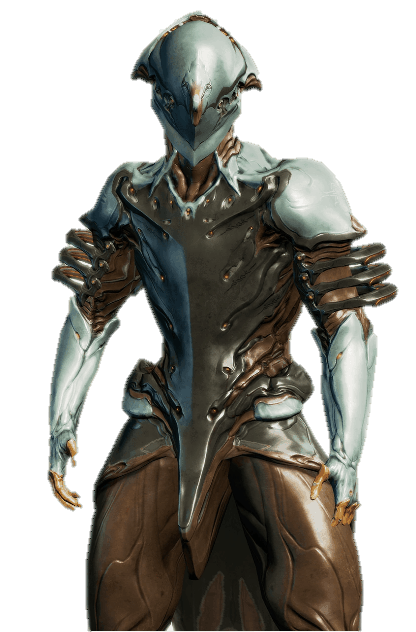
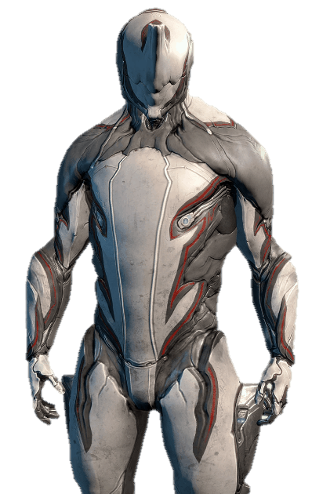

Warframes
Al inciar el juego se nos da a elegir entre los 3 siguientes Warframes:
Mag
{kind=link}
Mag es un Warframe basado en la fuerza magnética. Tiene un gran escudo a expensas de una salud y energía reducidas. Sus habilidades la hacen que sea una potencia media en el control del adversario.
Habilidades:
Tirón
La fuerza magnética atrae a los enemigos hacia ti, aturdiéndolos y trayéndolos al alcance de combate cuerpo a cuerpo.
Magnetizar
Crea un campo mágnetico alrededor de un objetivo, atrapando a los enemigos cercanos y causando daño con el tiempo. El campo reacciona a las balas y fragmentos creados por Polarizar para aumentar el daño.
Polarizar
Emite pulsos de energía que agotan los escudos y armadura de los enemigos, creando fragmentos que se vuelven letales al combinarlo con Magnetizar. Los escudos de los aliados alcanzados por el pulso son restaurados.
Aplastar
Magnetiza los huesos de los enemigos cercanos, provocando que colapsen entre sí.
Volt
{kind=link}
Volt puede crear y aprovechar los elementos Eléctricos.
Se trata de un warframe de gran daño, perfecto para jugadores que quieren una potente alternativa a las armas.
Volt tiene el poder de manejar y someter la electricidad. El es muy versátil, armado con poderosas habilidades que pueden dañar enemigos, dar cobertura y complementar el combate a distancia y cuerpo a cuerpo.
Habilidades:
Sacudida
Lanza un proyectil electrizante. Aturde e inflige daño elevado a un solo objetivo y causa daño en cadena a los enemigos cercanos.
Velocidad
Volt energiza su cuerpo y a los warframes cercanos, otorgándoles un incremento de velocidad y destreza por un corto periodo de tiempo.
Escudo eléctrico
Volt despliega un obstáculo de energía, proporcionando cobertura en cualquier situación.
Descarga
Paraliza a los hostiles cercanos con una carga eléctrica, esto también electrocuta a los enemigos que se acerquen.
Excalibur
{kind=link}
Este es Excalibur, maestro de la espada y el arma. Tu estilo no importa, Tenno, el Warframe Excalibur es una elección formidable. —Lotus
Excalibur es un Warframe espadachín. El poder de canalizar energía con su espada invocada, le permite ser un espadachín móvil con potentes métodos de ejecución.
Excalibur es una de las tres opciones iniciales para el jugador nuevo.
Habilidades:
Corte fugaz
Lánzate en medio de tus enemigos utilizando la Espada exaltada para cortar.
Destello radial
Emite un destello brillante de luz que ciega a todos los enemigos en un pequeño radio durante varios segundos.
Jabalina radial
Lanza jabalinas hacia los enemigos, infligiendo gran daño y empalándolos en las paredes.
Espada exaltada
Convoca una espada de pura luz e inmenso poder.
Aparte de los ya mencionados existen muchos más Warframes
Actualmente existen 54 tipos de Warframes, de los cuales, 25 tienen su versión Prime, y vienen más de camino.
Warframes
- Ash
- Atlas
- Banshee
- Baruuk
- Chroma
- Ember
- Equinox
- Excalibur
- Frost
- Gara
- Harrow
- Hildryn
- Hydroid
- Inaros
- Ivara
- Limbo
- Loki
- Mag
- Mesa
- Mirage
- Nekros
- Nezha
- Nidus
- Nova
- Nyx
- Oberon
- Octavia
- Rhino
- Revenant
- Saryn
- Trinity
- Titania
- Valkyr
- Vauban
- Volt
- Wukong
- Wisp
- Zephyr
Exiten Versiones y estados de Warframe que son las siguientes:
- Warframes normales.
- Warframes Primes.
- Warfames de vault (Aquellos que ya no se pueden conseguir).
- Warframe Umbra (Solo existe Excalibur Umbra).
- Warfames de vault (Aquellos que ya no se pueden conseguir).
- Warframes Primes.
Diferencias
Primes y Vault
- Ash Prime
- Banshee Prime
- Chroma Prime
- Ember Prime (vault)
- Equinox Prime
- Excalibur Prime (Paquete de Fundadores)
- Frost Prime (vault)
- Hydroid Prime (vault)
- Limbo Prime
- Loki Prime (vault)
- Mag Prime (vault)
- Mesa Prime
- Mirage Prime
- Nekros Prime (vault)
- Nova Prime (vault)
- Nyx Prime (vault)
- Oberon Prime (vault)
- Rhino Prime (vault)
- Saryn Prime (vault)
- Trinity Prime (vault)
- Valkyr Prime (vault)
- Vauban Prime (vault)
- Volt Prime (vault)
- Wukong Prime)
- Zephyr Prime (vault)